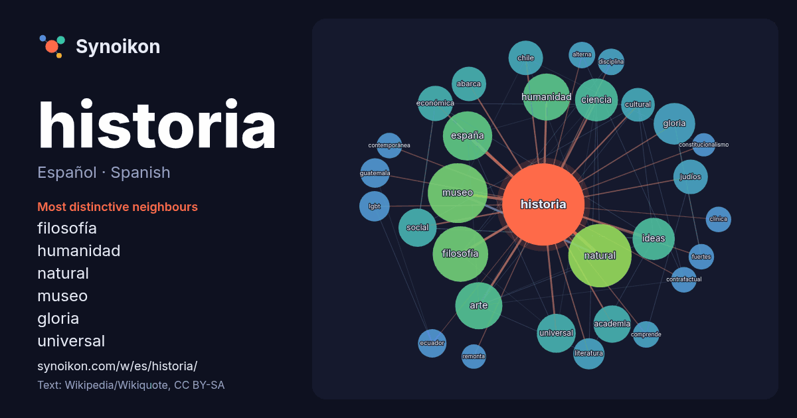

Español · Spanish · popular word
historia
“history” · The words found around it in 1679 instances from Spanish Wikipedia, Wikiquote.

Most distinctive neighbours
- filosofía 41×
- humanidad 35×
- natural 33×
- museo 30×
- gloria 29×
- universal 22×
- abarca 19×
- ideas 18×
- lgbt 17×
- ciencia 17×
- academia 16×
- económica 16×
- judíos 16×
- arte 14×
- alterna 14×
- contrafactual 13×
- guatemala 13×
- cultural 13×
- literatura 12×
- españa 12×
× = how many times more often than in general Spanish Wikipedia text.
Most frequent neighbours
- natural 74
- museo 66
- filosofía 57
- españa 45
- arte 41
- humanidad 41
- nacional 39
- ciencia 34
- ideas 33
- gloria 32
- ciudad 28
- universal 28
- social 27
- academia 26
- económica 23
- méxico 23
- abarca 22
- chile 22
- estudio 22
- judíos 22
In context
- latinizado Historiae —«Historias», en plural—), seminal para la ciencia histórica, y que suele denominarse en castellano Los nueve libros de historia. La lid Wikipedia snippets · Historia
- La historia universal, historia del mundo, historia mundial o historia de la humanidad es el conjunto de hechos y procesos que se han desarrollado en Wikipedia snippets · Historia universal
- La filosofía de la historia es la rama de la filosofía que estudia la teleología, la epistemología y la metafísica de la historia y la historiografía. Wikipedia snippets · Filosofía de la historia
- pintura de historia (o pintura histórica) es un género pictórico que se inspira en escenas con eventos de la historia cristiana, de la historia antigua (mesopotámica Wikipedia snippets · Pintura de historia
- La Real Academia de la Historia es una institución encargada del estudio de la Historia de España, «antigua y moderna, política, civil, eclesiástica, militar Wikipedia snippets · Real Academia de la Historia
- distintas subdivisiones de la historia, tanto temáticas (historia de las ideas, historia cultural, historia social, historia económica) como temporales y Wikipedia snippets · Historia de la ciencia
- términos, «historia natural» y «ciencias naturales», pertenecen al mismo campo semántico, aunque una diferencia importante entre ambos es que «historia natural» Wikipedia snippets · Historia natural
- La historia LGBT o historia LGTB es la historia relativa a las lesbianas, gais, bisexuales y transexuales. Su estudio abarca las situaciones sociopolíticas Wikipedia snippets · Historia LGBT
More Spanish words
- agua
- arte
- bosque
- caballo
- camino
- campana
- canción
- ciencia
- ciudad
- clima
- comida
- corazón
- desierto
- dinero
- dios
- espejo
- estrella
- familia
- fuerza
- gato
- invierno
- isla
- jardín
- lengua
- lluvia
- madre
- mapa
- miel
- montaña
- muerte
- naturaleza
- oro
- otoño
- pan
- perro
- puente
- reloj
- sal
- salud
- silencio
- sombra
- tiempo
- tormenta
- trabajo
- tren
- té
- verano
- verdad
- vida
Precomputed on 2026-10-09 with default settings (±5 words, medium corpus). The interactive map can refresh it with live data.